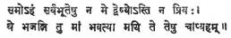

PROCESS OF SECULARIZATION
Dr. RAM CHANDRA GUPTA,
M.A., M.A. (Hons.), Ph. D.
Principal, I. K.
College,
There was a time in
human history when religion played a dominant role in the life of the
individual, nay, human society. It influenced and directed all kinds of
activities of human society–political, social and economic. At that time,
religion had its both good and bad effects on the life of society. If it
disciplined the human mind and stimulated the individual to lead a good and
honest life, making him fully aware of his responsibilities towards the entire
mankind, it also led to the disintegration of social and political life of
society by creating religious and caste groups in it. Although it was not the
fault of religion, it was used so to create dissensions in society. Truly
speaking, religion is an experience of or an insight into Reality. As Gandhiji
put it, “Religion changes one’s very nature and binds one indissolubly to the
Truth within.” If religion is a search for Truth, then it can never mislead
either the individual or society. But it seems to be a fact that it gradually
became degenerated into the hands of unworthy persons and was misused by them
for their personal gains. When religion lost its real essence, when it was
wrongly converted into a creed or dogma and when it was no
more regarded as a means for attaining self-realization, it became a source of
discord and exploitation in society and state.
As a reaction to the
social and political evils committed in the name of religion, the process of
secularization started in human society. Although there were other factors too
which led to the growth of secularism, serious social and political wrongs
produced the reaction of which secularism was one of the fruits. The
selfishness of the wealthy and influential classes, the unreasoning opposition
to political and religious freedom, the stolid dogmatism of theology, were all
powerful irritants; and it is not to be thought strange that, among the working
classes, consciousness of such a state of things begot not only extreme
political theories, but the tendency to anti-religious reaction. Secularism was
essentially a protest-movement. Although it was an attempt to provide a
positive policy, its positive nature was based upon a specific limitation of
ranges and outlook, rendered possible only by a reason of prejudice against the
religious implications of life and conduct, which secularism refused to take
into account. It proved impossible, therefore, as the history of secularism
shows, for the movement to disentangle itself from the political and social
passions out of which it arose.
The philosophical roots
of secularism run back to the ‘
While the main impulses
of the movement were derived from the social and political conditions which
roused its founders to rebel against the accepted doctrines of life and thought
prevalent in their day, its collateral influences were philosophical. This was
necessary so, since its avowed separation from religion made it incumbent upon
secularism to establish its claim to furnish a theory of life and conduct by an
appeal to philosophy, and especially ethics.
Secularism in the West
arose and developed at a period when the relations of science and religion were
beginning to be regarded as those of sharp opposition. However, relations of
secularism to religion were defined as mutually exclusive rather than hostile.
Theology processes to interpret the unknown world, while secularism is
concerned with this material world and its interpretation.
Holyoake is regarded as the
father of secularism who started propagating the movement in 1846 and laid down
its principles in his books Principles of Secularism and The Origin and the Nature of Secularism. Even
though secularism arose out of the desire to separate religion and state and
was regarded as materialistic and rationalistic, all the same it was an ethical
system founded expressly to provide an alternative theory of life. In other
words, secularism was not positively anti-religious as it appears to be but,
negatively religious because it does not sacrifice the ethical and human
considerations while dealing with the social and political problems of this
material world. By and large, it was equated with rationality, positivism,
materialism, utilitarianism, etc. Its essential principle was and is to seek
for human improvement by material means alone. It holds that such means are
more important and they are adequate to secure the desired end. Its principles
can be sustained by intellect as principles of reason and intelligence equally
applicable to all humanity to establish condition to eradicate poverty and
depravity.
As regards
Due to polytheistic
nature of Hindu religion, there was hardly any evidence of persecution in
This is essentially true
of the relations and intercourse between Hinduism and its greatest rival in
But, with the coming of Muhammadanism all was changed; and the various religious
faiths, which hitherto had amicably lived side by side, bent and suffered together
before the torrent of fanaticism and lust of conquest that swept over the land.
In the early centuries of conflict and persecution, Buddhism seems to have
suffered most and very many of its adherents were put to death. The adherents
of Hinduism were also persecuted as they were treated as infidels and idolators by the fanatic Muslim conquerors. But the
attitude of the conquerors ultimately became changed towards Hinduism. To crush
and eradicate the Hindu faith proved impossible. Christianity also came in
conflict with Hinduism when the former started its denunciation of popular
religious customs and festivals of Hindus and converting the lower-caste Hindus
to Christianity. The orthodox Hindus were also greatly provoked by the
activities of Christian reformers and preachers, and there were some instances
of social boycott of Christian converts, accompanied by violence.
However, the persecuting spirit is not natural to the Hindu, nor in accord with
the precepts of his faith.
The polytheistic
character of Hindu religion made the Hindus tolerant of other’s faiths, which
politically is termed as secularism. The secular state involves the idea of
religious equality. The state belongs to all. As such, all subjects,
irrespective of their religious differences, are the equal concern of the
state. This perfectly agrees with the philosophy of Hinduism. Non-discrimination
was the base of Hindu kingship. Sukracharya writes:
“God has created the king, though master in form, the servant of the people,
getting his wages in taxes, and this for the protection and growth of the
people in all classes”.3 The Emperor Asoka
proclaimed that his rule was for ‘the welfare of all folk’.4 The Gita echoes Sarva
bhuta hitay This
injunction implies that a Yogi must work for the goodwill and welfare of
all. The king is also like a Yogi, and hence he must also act
accordingly. Manu and Kautilya reduced the position
of a king to that of the servant of the state, or rather, as our forefathers
put it succinctly, of a ‘drudging slave’. The Mahabharata
exhibits as an ideal that a king should even give up his dear wife, if asked to
do so by his subjects: a popular and somewhat crude way of expressing the
king’s position, but all the same enshrining the radical demand of Hindu
constitution from its king to sink his individuality into his office. “A king
has no personal likes; it is the likes of the subjects (that should be followed
by him)5”, Kautilya writes. He adds to it
also that a king must follow the path of righteousness, and look after the growth
and welfare of his subjects, without making any difference between them.
Hindu scriptures and
Hindu law-givers enjoin the king or the ruler to treat all his subjects
equally, irrespective of their religious and social differences. In fact, Hindu
religion does not love quarrelling with other religions, and it does not
believe or permit religious persecution. One classical example will justify the
argument. The quiet end of Buddha contrasts vividly with the martyr’s deaths of
Socrates and Jesus. All the three undermined, in different degrees, the
orthodoxies of their time. As a matter of fact, Buddha was more definitely
opposed to Vedic orthodoxy and ceremonialism than was Socrates to the State
religion of Athens, or Jesus to Judaism, and yet he lived till eighty, gathered
a large number of disciples, and founded a religious order in his own lifetime.
Perhaps, the Indian temper of religion is responsible for the difference in the
treatment of orthodoxies.
From the time immemorial
down to the present day, Hindu religion has always stood for the ideal of human
equality and strived for bringing about harmony between different religions.
The Atharvaveda proclaimed: “Make me
dear both to Sudra and to Arya”6–the
upholders of the warring creeds of the day. According to the Gita, a yogi sees with an eye of equality, he
is inimical to none, his religion is non-opposition. And a true Hindu must
emulate him. In the Gita Lord Krishna
remarks: “I am the same towards all created beings; to Me (there) is not (some
one, who is) dveshya (that is, unliked), nor (some one, who is) priya
(that is, dear)”. 7 It is, therefore, not wise or progressive to
call modern India a secular state if the purpose is to show that Hinduism had
not before now exactly the objective which a secular state has, viz., an equal
treatment to all subjects. On the contrary, there can be no better word to
convey the basic idea of a secular state than the word ‘Hindu’, inasmuch as
Hinduism has for centuries stood for a hearty and wholesome respect for all
religions. In fact, Hindu is our term for the Western concept of human
equality. Through its vigorous and venturesome search for human equality, the
West at one stage of its progress was led to the controversy of secular state,
while India, under the compulsion of necessities to settle with the inroads of
races and religions, no less by the pressure of its philosophical temper,
discovered Hinduism to solve race relations and often religious controversies.
Thus secularism in our
country did not evolve on the Western lines. In the West, secularism was the
logical climax of the movement of renaissance, reformation, development of
science, advancement of knowledge and the emergence of the philosophy of
liberal democracy. Western secularism demonstrated the significance of ‘human
reason in political affairs.’ On the contrary, India’s social, religious and
political traditions, by and large, have been secular. As against the West,
secularism in India is partly the result of her rich religious and cultural heritage
and partly the result of her peculiar background of brutal and barbarous
conflicts that raged all over the country during the period of transition from
one rule to another. Hence, secularism in India has been the product of her
traditional belief in the spirit of toleration, reflected in the polytheistic
character of Hindu religion, as well as of consideration of expediency.
Further, the basic
principle of Western secularism–separation of state from the church – is not
relevant to the Indian situation. In India, there had been no church-state
controversy. Hinduism is not an organised religion.
The philosophical tradition of no other country is so free from social,
religious or nationalist bias as that of India. It is however true that in the
ancient or medieval periods India could not evolve a concept of the state as a
temporal reality of pure power-politics. The identification of the state with dharma,
implying the rule of righteousness and justice, in the ancient period was
in large measure a projection of spiritual transcendentalism in the realm of
politics. In the medieval period the priestcraft
exercised a strong influence on Indian polity, whether Hindu or Islamic, and
theology was blended with politics and law in a very subtle and intimate manner.
Hence it was thought expedient to develop a concept of state from a standpoint
of pure power-politics. It was necessary to avoid any possible conflict in
future between the state and religion, keeping in view of an overwhelming
influence of the priestcraft on Indian polity in the
medieval period.
It was under the British
rule that there was a considerable progress in India towards the evolution of a
secular polity. Although there was no philanthropy in imperialist politics of
the British ruling class, the secular and democratic temper of the British
nation contributed immensely to her success in India as an imperial power. The
British Government undoubtedly achieved conspicuous success both in the
negative and positive aspects of secularism the former upholding a certain
type of laissez faire in religious matters. It did not disturb the
equilibrium of traditional beliefs and customs of the Indian people and also
devised a progressive political machine which the Englishmen could conveniently
and efficiently handle. The Indian intellectual elite of the 19th
century, which was a creation of the British rule, was naturally drawn towards
it. It admired the British administration for its making a departure from
medieval polity in which the state was considered more or less the private
property of the ruler and where there was no scope for the rule of law. The
British administration, in spite of its being imperialist in tone and
character, gradually set the political machine in motion for enthroning the
concept of individual rights over and above that of passive obedience and quiet
submission to the commands of the state. Raja Rammohan
Roy was the first Indian of the modern era, who not only deeply felt but also
publicly admitted that his country was grateful to the British nation for
teaching her democratic and secular values of the West. He held a great
admiration for the British for the excellence of their judicial administration
and administrative machine. He thought that India was fortunate enough to be
under the able guidance of the British nation which worked to ensure her people
the same civil and religious privileges which the citizens of England were
enjoying. Bankim Chandra Chatterjee also remarked in his famous essay on
“Independence and Dependence” that the British rule offered to the Indians some
invaluable compensations. He wrote that the distinction which existed in
British India between an Englishman and Indian was “far less galling than the
distinction which existed between the Brahmans and Sudras”
in ancient India where there were different laws and rules for them. The
recognition of the principles of civil liberty and the introduction of European
science and literature were regarded as significant gains for the loss of
political power.8 Nurtured in the doctrines of British liberalism of
Bentham and Mill and the historical school of Burke
and Montesquieu, Indian intellectuals were highly
excited by the secular professions of the British Government. The declaration
made in the Charter Act of 1833 which opened public services to all the Indians
without any reference to religion, birth or colour
had a strong appeal to them. The Royal Proclamation (of Queen Victoria) in
1858, which aimed at pacifying the bitterness aroused by the Revolution of 1857
(popularly known as the Indian Mutiny), was hailed by them as an eloquent
expression of secular ideals. It declared: “We disclaim alike the right and the
desire to impose our convictions on any of our subjects that all shall alike
enjoy the equal and impartial protection of the law” and that the British Government shall ‘abstain from all
interference with the religious beliefs or worship of any of our subjects.
9
The Western ideals of
material and scientific progress and secularism were also imbibed by the leaders
of the Indian National Movement. The occasional communal clashes and
controversies that ultimately led to the partition of India in 1947 did not
dilute in any way the political and secular outlook of the Indian nationalism.
There comes a period (between 1920 and 1917) in the history of National
Movement when Gandhi approached the problem of religious communalism from a
different angle. He tried to work out a change of heart by the religion of
love. But he failed, because he took up religion which had become a tool of
politics and ceased to be a force of faith. He failed not because he tried
antics or that religion is not intrinsically what he thought it to be, but
because the knowledge got wedded to power and divorced from virtue. Prof. A. N.
Whitehead, an eminent philosopher of the modern age, defines religion as the
‘force of belief, cleansing the inner parts.’ Gandhi did not use religion to
resist either secularism or the new ideas, but to serve them. In 1940 when Liaquat Ali alleged that “the sole objective of the
Congress under Mahatma Gandhi’s fostering care has been the revival of Hinduism
and the imposition of Hindu culture on all and sundry,” the Mahatma gave a
memorable reply: “So far as my own objective is concerned, my life is an open
book. I claim to represent all the cultures, for my religion, whatever it may
be called, demands the fulfilment of all cultures...I
regard all religions with the same respect.”10 Gandhi was neither
ashamed of nor frightened by the mention of God or religion as his illustrious
disciple Jawaharlal Nehru was. He met politics by religion with a simple belief
in the progress of mankind. But it is a pity that he was misunderstood even by
his own partymen and that he failed in his mission of
bringing about communal harmony in the country by the religion of love.
With Gandhi passed away
the last active resistance to use religion to wrong ends. In their enthusiasm
for secular values, our leaders have preferred to drop completely religion out
of Gandhism without realising
the fact that the whole history of India is distinguished by the spirit of
toleration and goodwill. They feel that it is only through the secular state,
based on the Western ideals, that people can be held high above religious
communalism in political matters.
This objective was kept
in the forefront when the Constitution of the Indian Republic was framed. While
the term ‘secular’ nowhere appears in the Constitution of India, a reading of
its relevant articles (15 and 16 and from 25 to 28) will clearly indicate the
strong constitutional bases for the secular state. The above articles may be
examined under four headings: (1) the right of the individual to equal
treatment by the state, irrespective of his religion and faith, (2) the right
of the individual to freedom of religion, (3) the rights of religious groups,
and (4) the principle that state funds shall not be used to promote any
religion. All these articles dealing with the above headings are found in Part
III on Fundamental Rights. As such, the Indian Constitution has become a
perfect embodiment of the concepts and ideals that India assimilated during the
course of her political intercourse with Great Britain. In this context Sirdar D. K. Sen aptly remarks
that “greater than the conquests of the British armies have been the conquests
of the British concepts of freedom and democracy”. 11
Secularism has now
become an article of faith with our leaders, who are entrusted with the task of
shaping the future destiny of India. They feel that it is only through secularism
that the two nation theory, based on religious antagonism between the Hindus
and the Muslims, which played a great havoc in 1947 and is playing even now,
particularly in respect of Kashmir, can be finally put a stop to. Their faith
in secularism has been further strengthened by the creation of Bangla Desh. The breaking away of
Bangla Desh from Pakistan
has completely belied the assumptions on which the partition of the Indian
sub-continent was carried out. When the partition was decided upon in 1947 it
was assumed that once the Muslims are grouped in a separate and viable state,
the problem of Muslim co-existence with the Hindus would be solved. This has
not come to pass. The recent developments in Pakistan had underscored two
things. One, the bond of religion, however fervently held, is not strong enough
either to overcome tensions and contradictions of a social, economic and
political nature or to preserve the political unity of the country, Two, a
Muslim country can hope to progress only by eschewing revivalism and the
theocratic framework and not by deliberately fostering it. To what extent
Pakistan and other Muslim countries will draw the right conclusion from the
disintegration of Pakistan is something that remains to be seen.
As regards India, one
has to remember that during the last twenty-five years she has both consciously
and sedulously tried to build up a secular society within the country and that
the content of her secularism mostly stems out of her concern to bridge the
gulf between the Hindus and the Muslims so as to evolve a strong and stable
nation. The other aspects of secularism, viz., modernization, rationalism,
etc., have not been given adequate emphasis and as such, secularism has been
primarily confined to a political action rather than evolving into an overall
process. If it is to develop into an overall process, it will then have to be a
much broader and fundamental movement than merely becoming a political and
constitutional activity which it has been so far. Indeed, secularism in India
has been both a conscious philosophy and a matter of state policy in respect of
the elite who guide the destiny of our country. However, there is a
considerable room for the inculcation of secularism as a rational philosophy
of life and conscious activity in every sphere of the Indian society.
If secularism has to be
meaningful in India, it must then be interpreted in terms of a desire to
modernize. This involves a rational activity on the part of the state for
bringing about structural changes in the entire social set-up. Modernization is
a very complex process. It does not mean merely an economic and technical
development as it is understood in India. Modernization is something more than
this. It entails a complete freedom from particularistic loyalty to caste and
custom or religion and community, as also a scientific spirit to deal with the
problems of social, economic and political nature.
Further, secularism also does not mean merely a separation of the state from religion and political and constitutional mechanism. It means, other things being equal, a conscious change in the entire (Indian) social structure which is largely governed by traditional culture. Not to speak of the people at large, even the intellectuals in India are not free from the influence of traditional culture. Howsoever they may brag of their scientific and rational outlook in social and political matters and talk about secularism, they still continue to think and act in terms of their castes, religions, language and regions. Such an attitude can never be called scientific and secular. The values which emanate from the Indian culture are quite congenial to the maintenance of tradition. The various social practices and habits, such as child marriage, dowry, disregard for a female child, contempt for lower-caste people, etc., and social institutions, like caste and kin, still put a premium on the maintenance of traditional pattern. In fact, innovation or departure from the traditional pattern is discouraged.
Secularism has been
thought of in various ways, such as its antagonism to, nay its rejection of
religious values, and its consistency with rationality, utilitarianism,
individualism, etc. It has also been regarded as the sine qua non of
economic development, industrialization and an overall advancement in favour of rationality. A complete break from the
traditional social structure is implicit in the process of secularization. \
The movement towards
secularism in India appears to be in a bewildering situation and faces certain
challenges. On the one hand, if there is an emphasis on other-worldliness and a
slant for escapism from the realities of this world, then on the other there is
the degeneration of material gains and activity and the distortion of political
and social ethics. These set of things not only look queer and contradictory to
each other, but they have also become a stumbling block in the growth of
secularism in India. Further, Hinduism, the main religion of India, is a very
tolerant religion which embraces various sects and philosophies and which does
not put premium on any single method of worshipping and attaining salvation.
But its democratic character and philosophy of universalism have been tarnished
on account of the caste system which has been and continues to be an integral
feature of Hinduism. As the caste system puts a premium on functional
differentiation, mainly on an ascriptive basis, it
tends to undermine the universalistic philosophy which Hinduism is famous for.
To analyze the situation
further, the Hindus constitute a majority of population in India, but because
Hinduism is not an organised religion and it is known
for its spirit of toleration, the Indian Government finds it easier to
interfere with the personal laws of the Hindus. In its attempt to ensure
religious diversities in the name of secularism the State in India has taken
upon itself to reform the Hindu law, leaving Muslim and Christian laws
untouched. Such an action on the part of the Indian Government can hardly be
morally justified. As the fact stands, it has failed to act in consonance with
the requirement to the Indian Constitution12 with regard to
securing a uniform civil code for the citizens in the country, which is one of
the necessary conditions for the establishment of a secular state. At the same
time, one has to admit that there is a preponderance of the Hindu cultural
rituals in respect of inauguration of new schemes and projects in the country,
which is objected to by persons of other faiths. It is a patent fact that even
in the sphere of intellectual activities, the considerations of family, caste,
community, etc., dominate the scenes and there is a great deal of scope for
social and religious prejudices to flourish under such circumstances.
Innovation and freedom of activity is not appreciated.
Indeed, economic and
technological growth and political and constitutional mechanism are necessary
for the development of secularism. But over and above, the citizens are to be
rightly educated in order to reduce the influence of the traditional culture on
the one hand, and to facilitate the development of rationality, individualism
and innovation on the other. However, for the sake of rationality and
innovation, ethical values are not to be sacrificed. Secularism should not become
either a sheer matter of party politics or a vote-catching device, as it is
mostly the case today. The leaders and intellectuals in India must search their
hearts and find out whether or not they are true to the goal of secularism. It
is a truism that it is they who, for their own personal motives, mostly
misguide the simple masses and make them fight against one another, thereby
leading the society towards disunity and disruption. There is a lot of politics
going on in the country in the name of secularism. It is no use of talking
about secularism and appointing committees and commissions for its attainment
unless the leaders and intellectuals, entrusted with the task of shaping the
destiny of India, cleanse their hearts and work honestly for building India a
really secular state, which remains free from all kinds of social and political
prejudices and inhibitions and which permits rationality and innovation in
every sphere of human activity, but without sacrificing the ethical and human
values. They must also admit the fact that secularism in India will have to
convert the people and not to conquer them. The Indians are still a deeply
religious people and the role played by religion in certain aspects of their
life can hardly be ignored. And since the Indian society is a multi-religious
society, secularism in India has to develop along the lines of philosophy of
co-existence. All major policy decisions have to be arrived at on the basis of
free exchange of views and, as far as possible, by common consent. In view of
these facts, the Indian secularism is not likely to be an anti-thesis of
religion; on the other hand, it might imbibe a certain measure of spiritualism.
It cannot be developed and built purely on the Western lines, sacrificing the
cultural and religious values of the Indian society.
1 Manusmriti,
iv, p. 30.
2 Ibid., iii, p. 150.
3 Sukraniti, I,
188.
4 Royal Edict VI and Rock Edict XII.
5 Arthasastra,
Bk. I, Ch. 19: 16, p. 39.
6 Atharvaveda,
XIX, 12.1.
7 Gita, 9: 29.

8 British Paramountcy
and Indian Renaissance, Vol. 9, Bharatiya Vidya Bhavan publications, pp.
872-74;
9 Sir Courtenay Ilbert, The Government of India (1898), pp. 572-73.
10 “The Mahatma on the Two Nation Theory,” The
Hindustan Times, Delhi, April 14, 1940.
11 Sirdar D. K. Sen, A Comparative Study of the Indian Constitution (1960),
Preface.
12 Refer to Article 44 of the Indian Constitution.